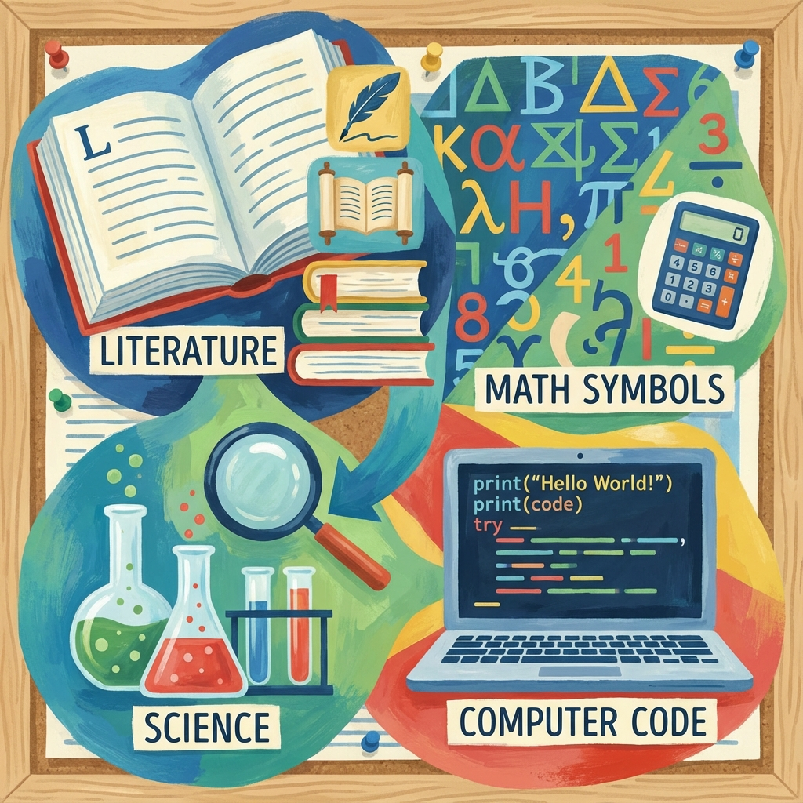

1. Co ChatGPT při tvorbě pracovních listů skutečně umí
Než se do toho pustíme, sundejme růžové brýle. Berte ChatGPT jako rychlého asistenta, ne jako náhradu učitele. Učitel bez myšlení je horší než žák s TikTokem.
✅ Co ChatGPT UMÍ
- Generuje úlohy, texty, otázky, zadání
- Diferencuje obtížnost (lehké / střední / náročné)
- Přizpůsobí styl věku, oboru i úrovni žáků
- Navrhne řešení a klíč
- Vysvětlí látku jinými slovy, klidně třemi způsoby
❌ Co NEUMÍ
- Znát tvou konkrétní třídu
- Odhadnout reálnou časovou náročnost bez korekce
- Automaticky hlídat RVP, ŠVP a školní zvyklosti (to je pořád vaše práce)
2. Základní princip: dobrý pracovní list = dobrý vstup
Nejčastější chyba začátečníků: „Vytvoř mi pracovní list na minulý čas.“
Výsledek? Generická kaše, použitelná maximálně jako inspirace. Místo toho potřebuješ říct: pro koho to je, na co přesně, v jaké formě, jak dlouho to má trvat a co má žák po splnění umět. Tohle je rozdíl mezi náhodným generováním a řízenou tvorbou.
3. Univerzální kostra promptu (doporučeno uložit)
Toto je základ, který funguje napříč předměty:
Vytvoř pracovní list pro žáky [ROČNÍK / VĚK].
Téma: [KONKRÉTNÍ TÉMA].
Cíl pracovního listu: [CO SE MAJÍ NAUČIT].
Časová dotace: [NAPŘ. 45 MINUT].
Pracovní list má obsahovat:
- krátké úvodní vysvětlení
- úlohy od lehkých po náročnější
- různé typy úloh (doplňování, výběr, otevřená otázka, aplikace)
- místo pro odpovědi
Na konec přidej řešení pro učitele.
Tohle není magie. To je pedagogická disciplína přenesená do textu.
4. Konkrétní příklady (a proč fungují)
Příklad 1: Jazyk – začátečník
Výsledek: použitelný list, minimum balastu, dobře diferencované úlohy.
Příklad 2: Odborný předmět – střední škola
Tohle je přesně místo, kde ChatGPT září – scénáře, vysvětlování chyb, modelové situace.
5. Diferenciace: stejný list, různé úrovně
Velká výhoda ChatGPT oproti učebnicím: nestojí tě to žádný čas navíc. Stačí dodat:
A – základní
B – standardní
C – rozšiřující (pro nadané žáky)
Najednou máš materiál pro inkluzi, klidnější hodinu a jistotu, že se slabší žáci neutopí a silní nenudí. Tohle by ti žádná učebnice nedala bez dalšího plánování.
6. Pracovní list jako stavebnice
Důležitá pedagogická pravda: Pracovní list není hotový produkt. Je to polotovar.
- Nech ChatGPT vygenerovat návrh
- Projdi ho učitelským okem
- Zkrať, vyhoď, uprav formulace
- Přidej vlastní příklad nebo školní kontext
Učitel, který bere výstup AI jako hotovou pravdu, si zadělává na průšvih. Stejně jako ten, kdo kdysi slepě věřil Wikipedii.
7. Export a použití v praxi
ChatGPT může formátovat text pro Word, připravit obsah pro PDF, strukturovat otázky pro Microsoft Forms / Google Forms nebo rozdělit úlohy na kartičky.
8. Ukázky promptů podle předmětů (SŠ)
Český jazyk a literatura
Gramatika: "Zaměř se na: rozpoznání typu věty v souvislém textu, praktické použití (ne definice zpaměti)."
Literatura: "Vytvoř otázky: na pochopení textu, na interpretaci, jednu otevřenou diskuzní otázku."
Angličtina
Gramatika s kontextem: "Použij: reálné situace (cestování, práce), krátké dialogy, postup od jednoduchých vět ke složitějším."
Odborná angličtina: "Úkoly: slovní zásoba, porozumění krátkému textu, tvorba jednoduchých vět v kontextu BOZP."
Ekonomika / ZSV
Ekonomie: "Zaměř se na: praktické příklady z běžného života, jednoduché modelové situace, úlohu co se stane, když…"
Odborné technické předměty
Elektrotechnika: "Zaměř se na: bezpečnost, typické chyby v zapojení, praktické otázky z praxe."
9. Shrnutí bez pozlátka
- Dobrý prompt = polovina hotového pracovního listu
- Čím konkrétnější zadání, tím méně oprav
- ChatGPT je nejsilnější v scénářích, aplikaci, diferenciaci
ChatGPT nenahrazuje učitele. Nahrazuje únavu, rutinu a prázdné zírání do monitoru v neděli večer. A to je přesně to místo, kde má technologie sloužit.